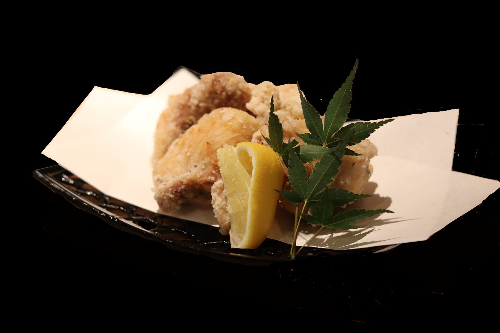
DŌGO YAKITORI ICHI
道後の夜に、
炭火焼き鳥と一杯を。Yakitori and drinks in Dogo, Matsuyama.
香ばしく焼き上げる、店自慢の串。気取らずゆっくり楽しめる、道後の焼き鳥店です。Enjoy charcoal-grilled yakitori in a warm, relaxed setting.
電話で予約 / Call to reserveOPEN18:00–23:00 / L.O. 22:30Last order 10:30 PM
HOLIDAY火曜日Closed Tuesdays
SEATS30席 / 平均 3,000円30 seats / about ¥3,000
Menu
炭火で焼き上げる、
道後焼き鳥一の焼き鳥メニュー。Charcoal-grilled yakitori menu.숯불로 구워내는 야키토리 메뉴입니다.
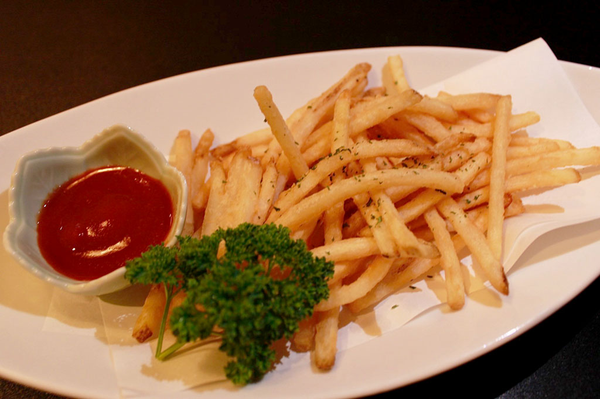

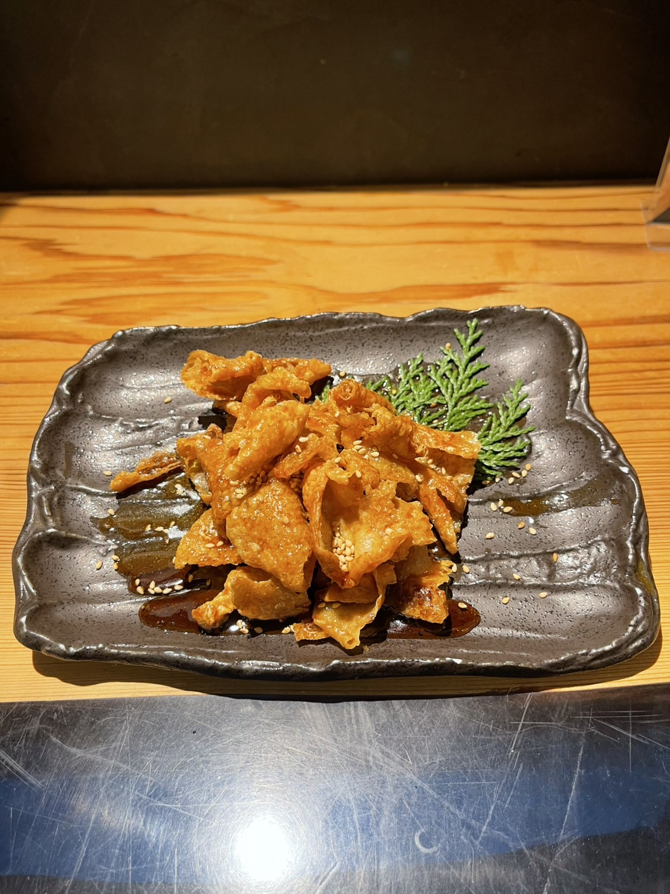

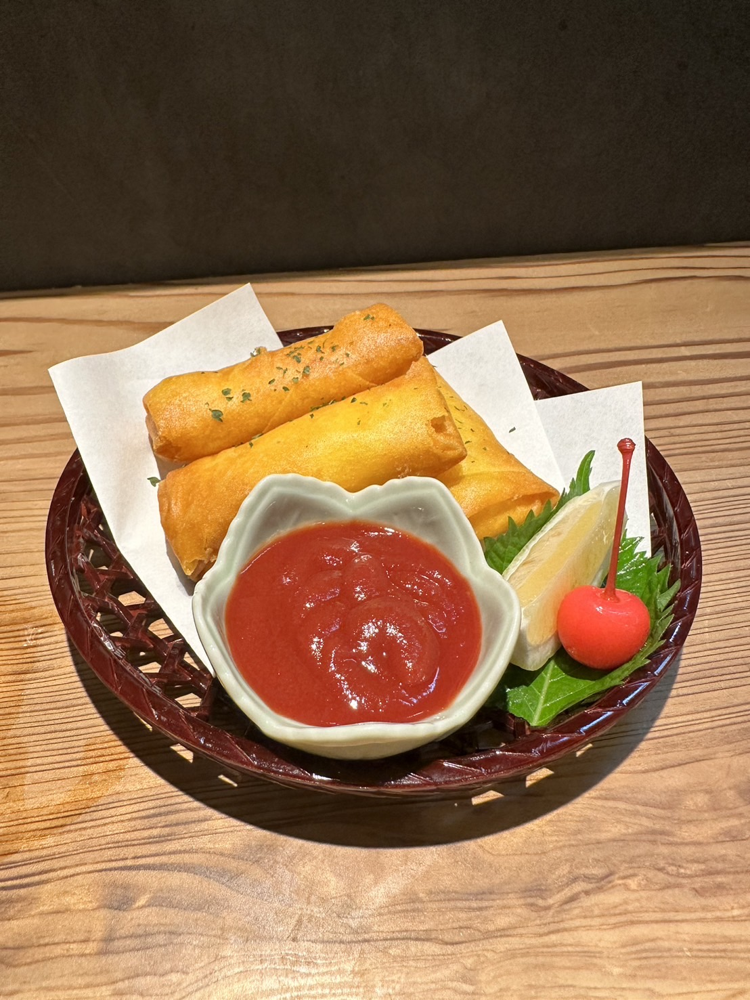
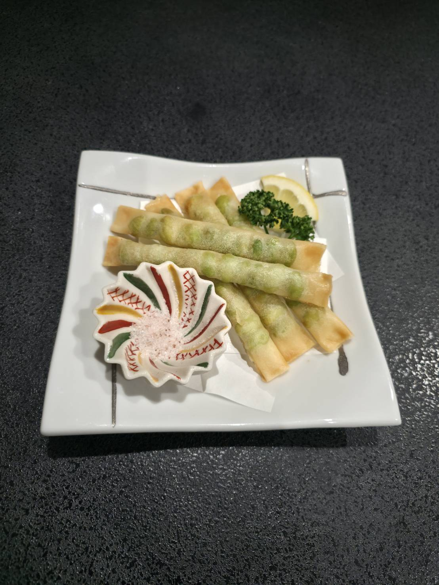
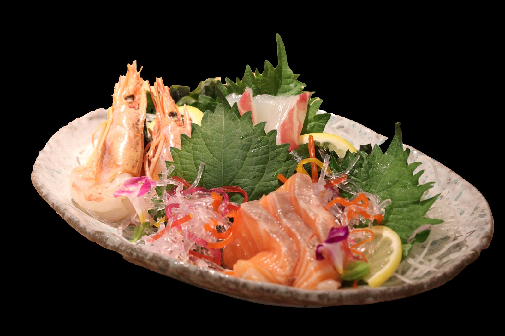
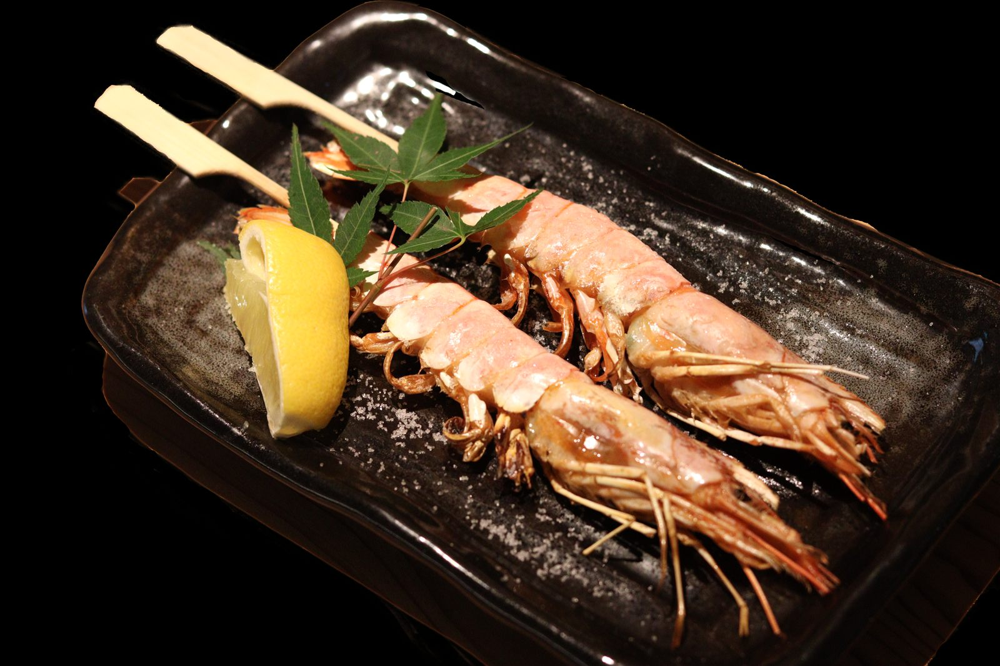

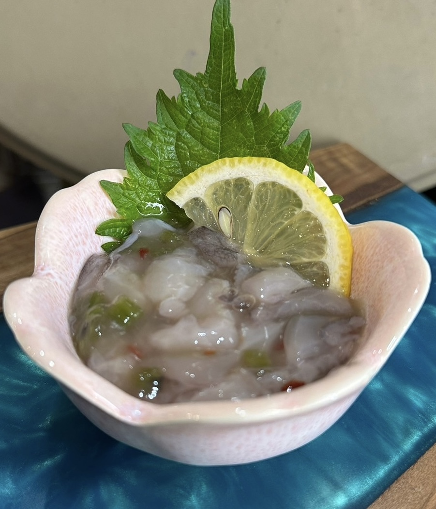
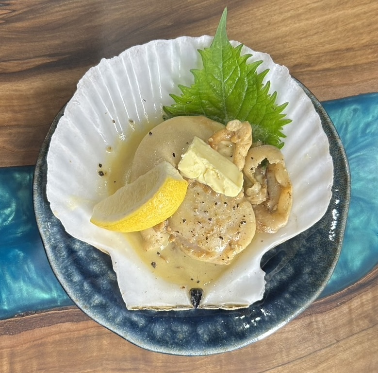
Drinks
焼き鳥に合わせたい、
冷たい一杯。A cold drink makes yakitori even better.야키토리와 잘 어울리는 차가운 한 잔.
炭火の香ばしさには、キンキンに冷えた生ビール。食後やゆっくり飲みたい方には、果実感のある梅酒もおすすめです。Start with an ice-cold draft beer, or enjoy fruity plum wines with your meal.시원한 생맥주와 과일 향이 좋은 매실주를 함께 즐겨보세요.
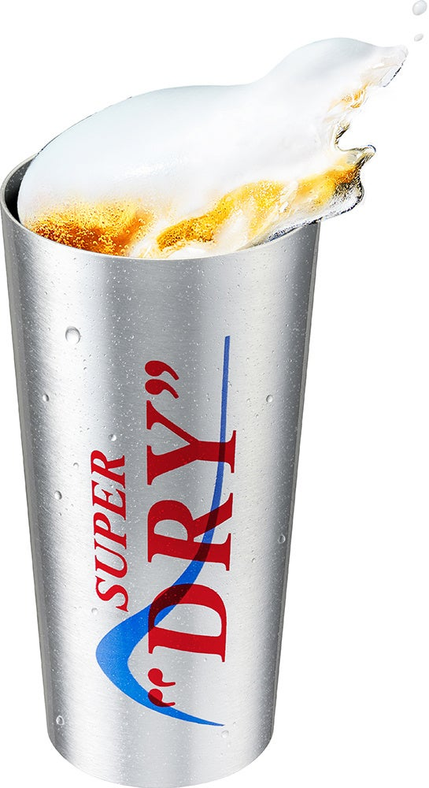
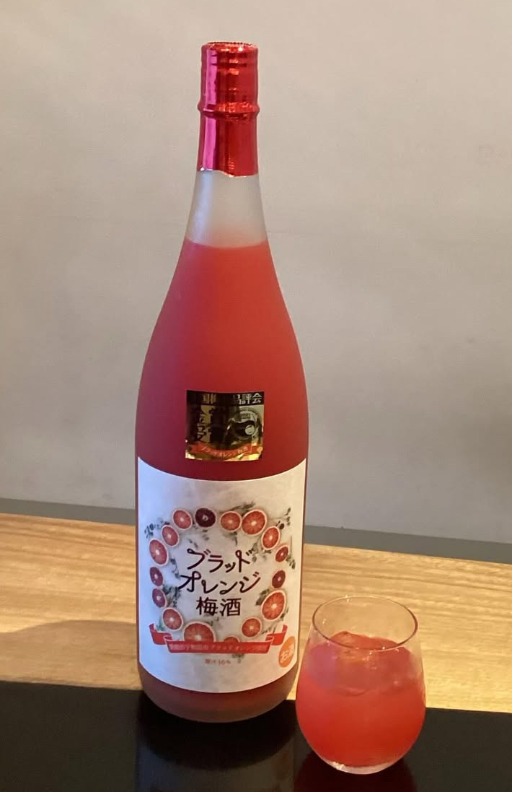
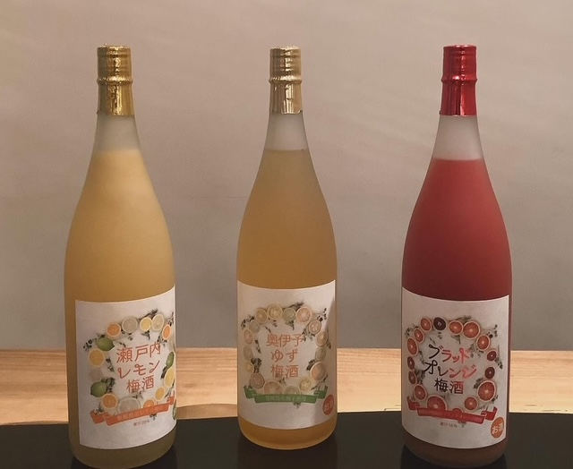
生ビール キンキンタンブラーIce-cold draft beer tumbler얼음처럼 차가운 생맥주 텀블러
焼き鳥の一本目に合わせたい、のどごしの良い一杯。
ブラッドオレンジ梅酒Blood orange plum wine블러드 오렌지 매실주
甘酸っぱく華やか。女性や海外のお客様にもおすすめです。
瀬戸内レモン梅酒Setouchi lemon plum wine세토우치 레몬 매실주
爽やかなレモンの香りで、串ものにもよく合います。
奥伊予ゆず梅酒Oku-Iyo yuzu plum wine오쿠이요 유자 매실주
ゆずの香りが広がる、食後にも飲みやすい一杯。
※その他、ハイボール・サワー・ソフトドリンクなどもご用意しています。
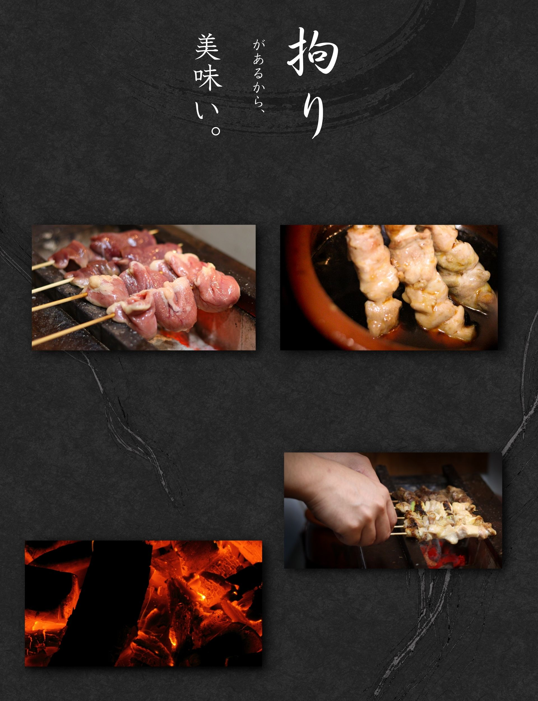
Our Craft
こだわりを、
一本ずつ。Carefully grilled, skewer by skewer.
素材の持ち味を生かし、炭火の香りをまとわせる。焼き場から届く、できたての一串をお楽しみください。We bring out the best in every ingredient with the aroma of charcoal. Please enjoy each skewer fresh from the grill.
Seats
今夜の気分に寄り添う、
心地よい30席。A welcoming space with 30 seats.
お一人での一杯にも、仲間との食事にも。木の温もりを感じる空間で、ゆったりとした時間をお過ごしください。Whether you are dining alone or with friends, relax in our warm wooden interior.
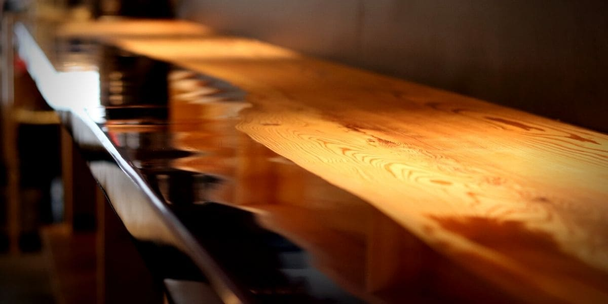
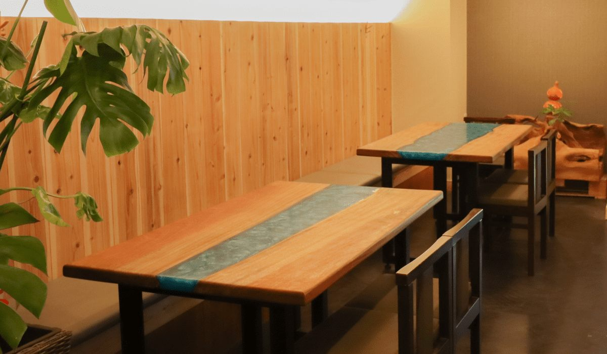
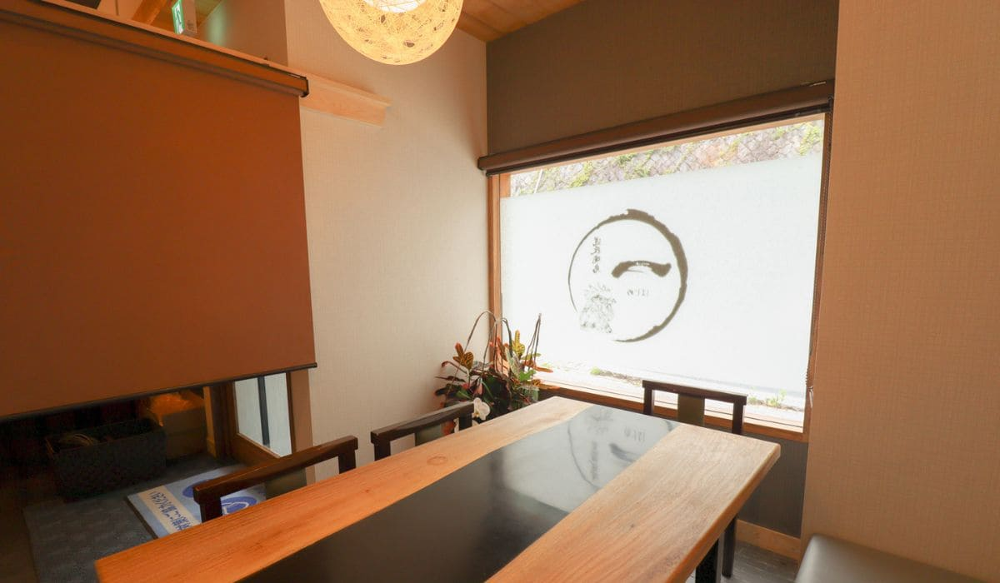
Access & Reservation
店舗情報・ご予約Restaurant information & reservations
- 営業時間Hours
- 18:00〜23:00
ラストオーダー 22:30Last order: 10:30 PM - 定休日Closed
- 火曜日Tuesdays
- 席数Seating
- 30席30 seats
- お支払いPayment
- VISA・Mastercard・American Express
各種QR決済Credit cards and QR-code payments accepted.